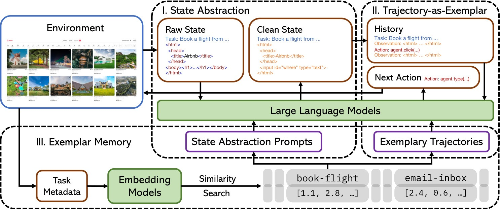
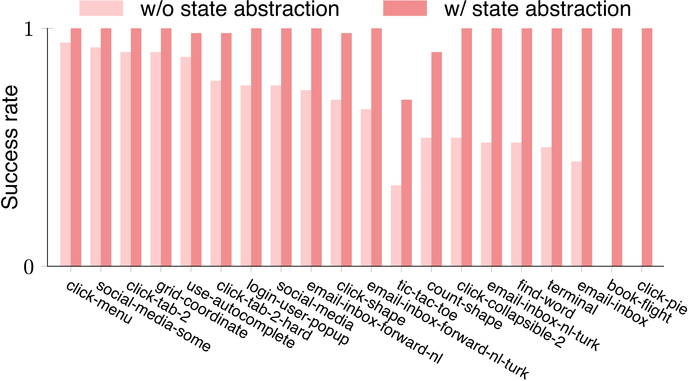
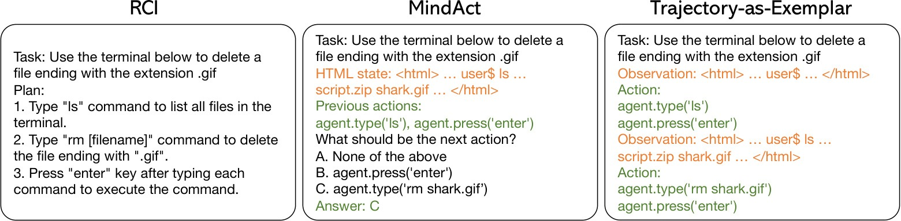
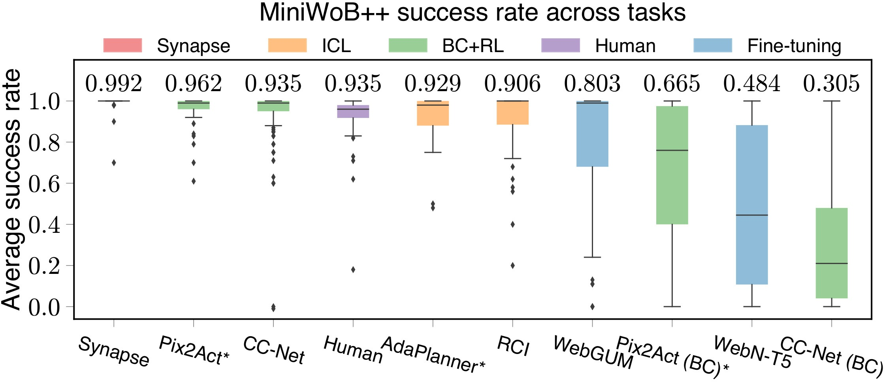
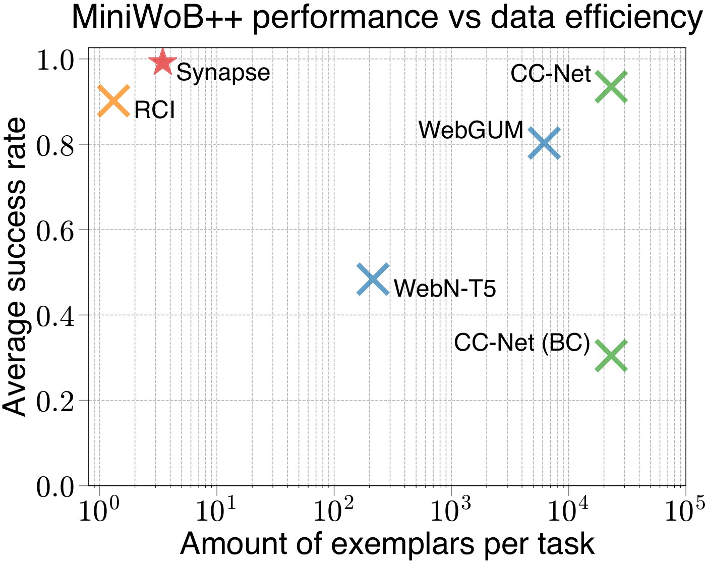

웹 에이전트는 왜 예시를 넣어도 자꾸 길을 잃을까
흐름: 긴 raw state → 예시를 거의 못 넣는 prompting → multi-step trajectory를 못 담는 기존 구조
기존 exemplar prompting은 웹 탐색의 난점을 정면으로 못 다룬다
Synapse의 문제의식은 단순하다. 웹 에이전트는 예시를 쓰고는 있지만, 정작 웹 탐색이 어려운 이유에 맞는 형태로 예시를 쓰고 있지 않다.
웹 환경에서는 상태가 너무 길다. 한 페이지의 HTML만으로도 context window를 거의 다 써버릴 수 있다. 그러면 few-shot exemplar를 여러 개 넣는 것 자체가 어려워진다. 더 큰 문제는 기존 exemplar 구조가 trajectory를 잘 담지 못한다는 점이다. 고수준 plan은 중간 상태의 변화와 실제 action grounding을 충분히 보여주지 못하고, MCQ 방식은 step마다 다시 물어보는 구조라 long-horizon task에서 오류가 쉽게 누적된다.
논문은 이 출발점을 아주 선명하게 적어둔다.
"The limited context length of LLMs and complex computer states restrict the number of exemplars..."
즉 Synapse는 "LLM이 웹을 잘 못한다"보다 먼저, "웹 탐색을 가르치는 exemplar 포맷 자체가 잘못됐다"는 쪽에서 문제를 다시 정의한다.
Synapse 한눈에 보기
흐름: state를 줄인다 → trajectory를 exemplar로 넣는다 → memory에서 비슷한 예시를 가져온다
이 논문의 핵심은 세 가지를 한 번에 묶는 것이다
Synapse는 state abstraction, trajectory-as-exemplar prompting, exemplar memory라는 세 개의 부품을 하나의 파이프라인으로 엮는다.
먼저 raw HTML이나 화면 상태를 그대로 LLM에 던지지 않는다. task와 관련 있는 정보만 남긴 clean observation으로 압축한다. 그다음에는 "다음 action 하나"만 맞히게 하는 대신, 성공한 trajectory 전체를 exemplar로 넣는다. 마지막으로 exemplar를 task별로 고정하지 않고 memory에 저장해 similarity search로 꺼내 쓴다.
"Synapse has three core components: i) state abstraction ... ii) trajectory-as-exemplar prompting ... iii) exemplar memory ..."
여기서 중요한 건 세 요소가 따로 놀지 않는다는 점이다. state abstraction이 있어야 exemplar를 더 많이 넣을 수 있고, trajectory exemplar가 있어야 장기 의존성을 보여줄 수 있으며, memory가 있어야 본 적 없는 task에도 비슷한 루틴을 가져다 쓸 수 있다.

State Abstraction
흐름: raw HTML의 잡음 제거 → 더 많은 exemplar 삽입 → 복잡한 페이지도 다룰 수 있게 됨
Synapse는 먼저 상태를 줄여서 context를 되찾는다
이 논문에서 가장 실용적인 아이디어는 웹페이지를 그대로 읽히는 대신, task와 관련된 observation만 남겨 context를 확보하는 것이다.
기존 방법은 HTML state가 길어질수록 exemplar 수가 줄어들고, 그러면 in-context learning의 장점도 함께 사라진다. Synapse는 상태를 clean state로 바꾸는 state abstraction 단계를 별도로 둔다. MiniWoB에서는 상태-관찰 쌍이나 task-specific parsing code를 이용해 압축하고, Mind2Web에서는 top-ranked element를 더 작게 잘라 직접 generation에 적합한 관찰로 바꾼다.
이건 단순한 token 절약 이상이다. task-irrelevant 정보가 줄어들수록 LLM이 어디를 봐야 하는지도 더 분명해진다.

이 단계가 왜 중요한지는 book-flight 하나만 봐도 드러난다
Synapse가 MiniWoB++의 book-flight를 푼 첫 ICL 방법이었다는 사실은 state abstraction이 단순 보조 장치가 아니라는 걸 보여준다.
book-flight는 항공편 검색 결과 페이지가 길고, 조건 비교도 필요해서 기존 ICL 방식이 context 길이와 multi-step error accumulation에 모두 걸리던 태스크다. Synapse는 이 상태를 줄여 exemplar를 넣을 공간을 만든 뒤, trajectory 단위 reasoning을 보여주면서 처음으로 이 task를 안정적으로 푼다.
논문이 말하는 메시지는 분명하다. 웹 에이전트의 병목은 "추론 능력 부족"만이 아니라, 그 추론을 가능하게 할 입력 구조가 없었다는 것이다.
Trajectory-as-Exemplar Prompting
흐름: plan은 너무 추상적임 → MCQ는 step-local함 → trajectory exemplar는 상태 변화와 행동 흐름을 같이 보여줌
Synapse는 plan도 아니고 MCQ도 아닌, 성공 trajectory 자체를 exemplar로 쓴다
이 논문의 이름이 붙은 이유도 여기 있다. Synapse는 웹 탐색에서 정말 필요한 예시는 "다음 action 정답"이 아니라 "어떤 상태 변화 속에서 어떤 행동들이 이어졌는가"라는 trajectory라고 본다.
RCI처럼 plan만 주면 실제 action grounding은 매 step 새로 해야 한다. MindAct처럼 MCQ를 쓰면 다음 행동 하나를 맞히는 데는 유리할 수 있어도, 긴 작업에서 전체 흐름을 잡는 데는 약하다. Synapse는 observation-action pair의 연속으로 이루어진 complete trajectory를 exemplar로 넣어, 모델이 다음 한 걸음이 아니라 "이런 상태에서 보통 어떤 흐름으로 진행되는가"를 보게 만든다.
"Trajectory-as-exemplar prompting ... utilizes full successful trajectories as few-shot exemplars..."

그래서 repeated action과 long-horizon task에서 차이가 커진다
trajectory exemplar의 강점은 비슷한 동작이 여러 번 반복되는 문제에서 특히 크게 드러난다.
논문은 guess-number, use-spinner, use-autocomplete처럼 반복 action과 다단계 진행이 섞인 태스크를 예로 든다. 이런 작업은 각 step의 정답만 따로 맞혀서는 잘 안 풀린다. 어떤 상태를 만들기 위해 어떤 action sequence를 밟아왔는지를 함께 보여줘야 한다. Synapse는 바로 그 history를 exemplar 수준에서 제공한다.
즉 plan이 너무 추상적이고 MCQ가 너무 국소적이었다면, Synapse는 그 사이에 있던 "trajectory 그 자체"를 exemplar의 기본 단위로 올려놓는다.
Exemplar Memory
흐름: task-specific exemplar의 한계 → similarity search로 비슷한 trajectory retrieval → unseen task generalization
Synapse는 exemplar를 task별로 고정하지 않는다
이 논문의 세 번째 축은 memory다. 중요한 건 memory에 저장하는 대상이 task 이름이 아니라 reusable trajectory라는 점이다.
기존 방법은 대개 특정 task에 특정 exemplar를 붙여둔다. 그러면 이름만 다른 비슷한 task, 레이아웃만 조금 다른 task, 혹은 같은 domain의 새로운 문제로 넘어갈 때 일반화가 약해진다. Synapse는 task description과 initial state 같은 metadata를 임베딩해 memory에서 비슷한 exemplars를 찾고, 이를 현재 task에 few-shot context로 붙인다.
이 메모리 덕분에 email-inbox-nl-turk에서 배운 흐름을 email-inbox-forward-nl-turk로 옮기고, multi-layouts에서 본 패턴을 multi-orderings에도 가져갈 수 있다. 논문이 48개 태스크의 demonstration만으로 64개 태스크를 해결했다고 강조하는 이유도 여기에 있다.
다만 memory는 가까운 domain에서 더 잘 듣는다
논문이 정직하게 보여주는 포인트 하나는, memory 이득이 항상 균일하지는 않다는 점이다.
Mind2Web에서는 cross-task, cross-website에서는 memory가 step success rate를 더 올려주지만, cross-domain에서는 개선이 아주 작거나 거의 없다. retrieval된 exemplar와 현재 문제의 거리가 멀어질수록 오히려 도움이 줄어드는 것이다. 즉 Synapse의 memory는 "무엇이든 다 기억하면 좋다"가 아니라, 비슷한 task structure를 공유하는 영역에서 특히 강하다.
이 한계는 오히려 이후 memory 연구들이 왜 hierarchy, workflow abstraction, lesson distillation 쪽으로 나아갔는지를 이해하게 해준다.
실험 결과
흐름: MiniWoB++ human-level ICL → Mind2Web에서 component별 상승 → 무엇이 실제로 성능을 끌어올렸는지 확인
MiniWoB++에서는 당시 ICL 웹 에이전트의 ceiling을 끌어올렸다
Synapse는 MiniWoB++에서 평균 99.2% 성공률을 기록하며, self-correction 없이도 human-level에 도달한 첫 ICL 계열 결과를 보여준다.


숫자만 다시 적으면 더 또렷하다.
- 64개 MiniWoB++ task에서 평균 성공률
99.2% - demonstration은
48개 task에서만 사용 book-flight를 푼 첫 ICL 방식
즉 Synapse는 "웹 에이전트를 잘 만들려면 결국 대규모 BC나 RL이 필요하다"는 당시 분위기에 꽤 강한 반례를 던진다.
Mind2Web에서는 세 부품이 단계적으로 성능을 끌어올린다
Mind2Web 결과의 핵심은 Synapse가 하나의 마법 트릭이 아니라, 세 요소가 실제로 누적 이득을 만든다는 걸 ablation으로 분명히 보여준다는 점이다.
| 방법 | Cross-Task Step SR | Cross-Website Step SR | Cross-Domain Step SR |
|---|---|---|---|
| MindAct (GPT-3.5) | 17.4 | 16.2 | 18.6 |
| Synapse w/ state abstraction | 25.2 | 19.6 | 24.3 |
| + TaE prompting | 29.2 | 22.7 | 26.2 |
| + memory | 30.6 | 24.2 | 26.4 |
논문은 이 결과를 이렇게 요약한다.
"we incrementally equip direct generation with state abstraction, trajectory prompting, and exemplar memory"
이 표가 중요한 이유는 두 가지다.
- state abstraction만으로도 MCQ 기반 MindAct보다 크게 좋아진다
- 그 위에 trajectory exemplar와 memory를 얹을수록 추가 이득이 생긴다
즉 Synapse는 "더 좋은 prompt wording"이 아니라, 웹 에이전트 입력과 예시 구조를 통째로 다시 설계한 결과다.
왜 이 논문이 아직도 중요할까
흐름: trajectory memory의 원형 → 이후 workflow/hierarchical memory 연구의 출발점 → 지금 봐도 남는 메시지
Synapse는 이후 웹 에이전트 memory 연구의 출발점 중 하나다
지금 시점에서 보면 Synapse의 가장 큰 의미는 "trajectory를 memory item으로 쓰는 웹 에이전트"의 강한 원형을 만들었다는 데 있다.
이후 논문들은 여기서 조금씩 다른 방향으로 확장된다. 어떤 연구는 trajectory를 workflow로 추상화하고, 어떤 연구는 hierarchical memory tree를 만들며, 어떤 연구는 실패 경험을 reflection이나 lesson으로 바꿔 저장한다. 하지만 출발점에는 공통된 질문이 있다. 웹 에이전트는 무엇을 exemplar로 기억해야 하는가?
Synapse의 대답은 분명하다. 우선은 plan도 MCQ도 아닌, 성공 trajectory 자체가 가장 풍부한 학습 단위라는 것이다. 그리고 그 trajectory를 넣을 공간을 확보하려면 state를 줄여야 하고, 일반화하려면 memory retrieval이 필요하다.
다만 바로 다음 세대가 넘어선 한계도 분명하다
동시에 Synapse는 왜 이후 연구들이 더 추상적인 memory로 이동했는지도 보여준다.
trajectory는 정보가 풍부하지만, 여전히 특정 사이트 구조와 세부 step에 묶이기 쉽다. 그래서 domain이 멀어질수록 memory 이득이 줄고, retrieval이 잘못되면 오히려 도움이 약해진다. 이 지점에서 나중의 workflow memory, lesson memory, reasoning memory 논문들이 등장한다.
그래도 Synapse는 여전히 강하다. 웹 에이전트에서 "예시를 어떻게 넣을 것인가"라는 질문에 대해, 가장 깔끔하고 직관적인 답 하나를 처음 제대로 밀어붙인 논문이기 때문이다.